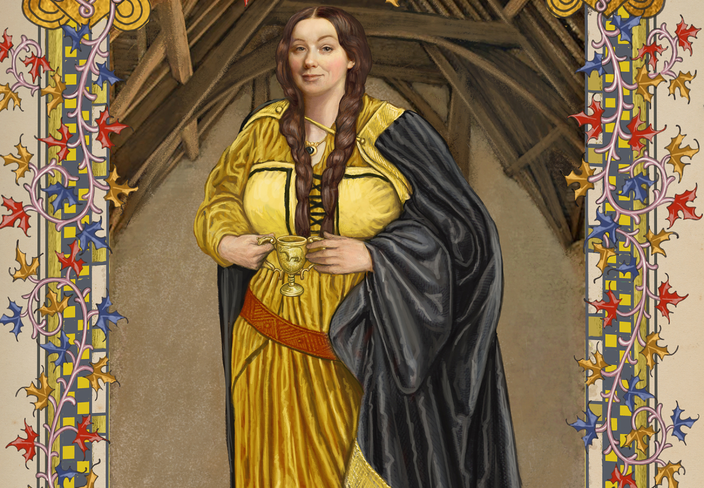
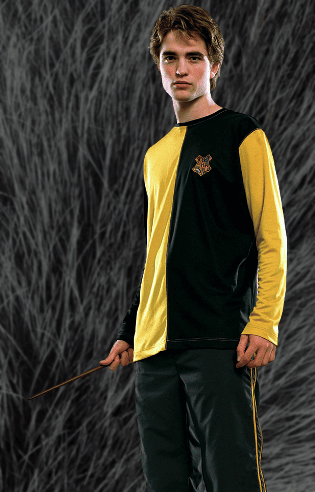
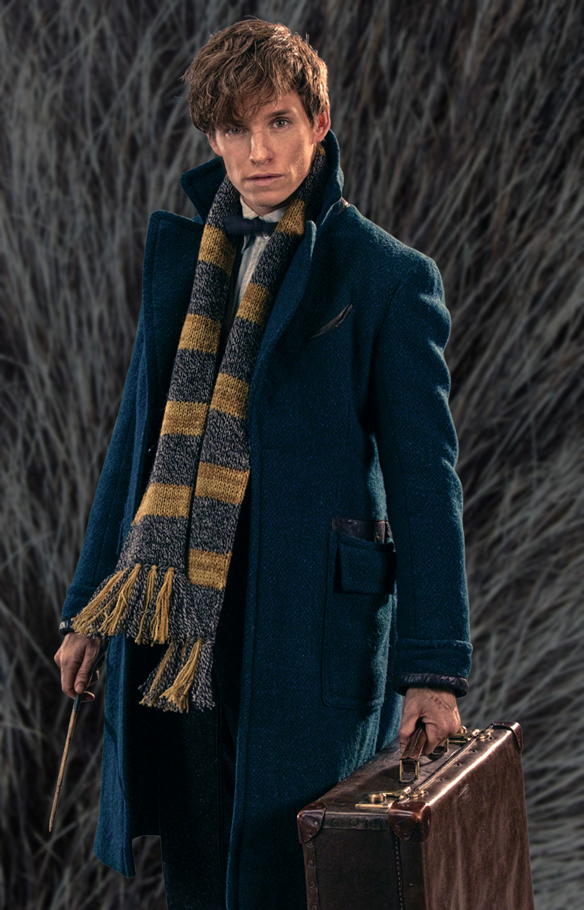
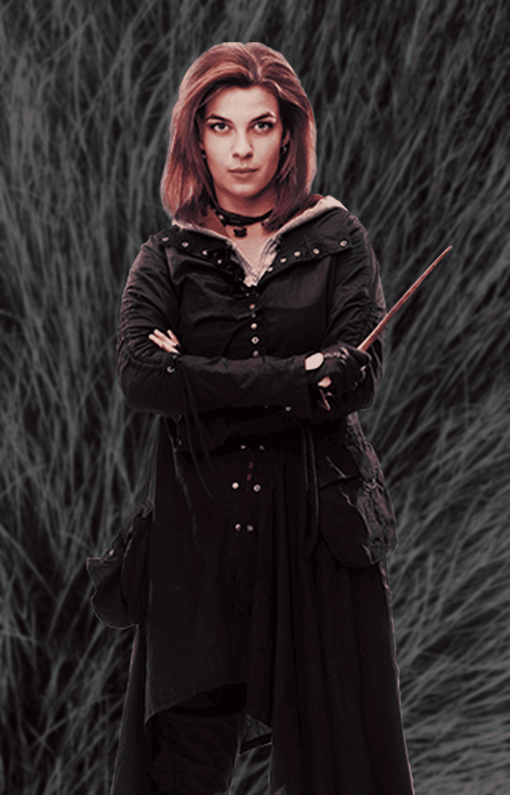

"You might belong in Hufflepuff, Where they are just and loyal, Those patient Hufflepuffs are true, And unafraid of toil."
— Sorting Hat
Hufflepuff is one of the four Houses of Hogwarts School of Witchcraft and Wizardry. Its founder is the medieval witch Helga Hufflepuff. Hufflepuff is the most inclusive among the four houses, valuing hard work, dedication, patience, loyalty, and fair play rather than a particular aptitude in its members.
The emblematic animal is a badger, and yellow and black are its house colors. The Fat Friar is the House's patron ghost.
Hufflepuff corresponds roughly to the element of earth, and it is for that reason that the House colors are chosen: yellow represents golden wheat, while black symbolizes fertile soil. The Hufflepuff points hourglass contains yellow diamonds. Students sorted into Hufflepuff often demonstrate strong abilities in Herbology, owing to their connection to earth.

Helga Hufflepuff (early 993) was a Welsh witch and was one of the four founders of Hogwarts School of Witchcraft and Wizardry. While the other founders chose to have special students, she accepted them all without preference, although she did want them to be loyal and hard-working. Helga's portrait remained at Hogwarts by at least the 1980s.


